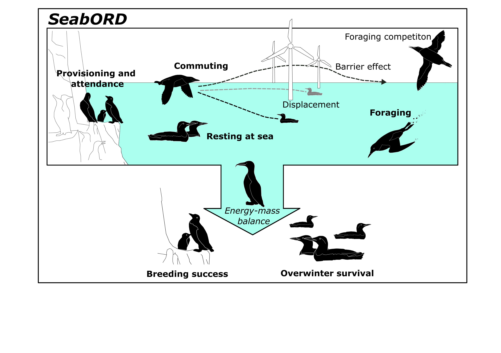

Overview
seabORD is an R package for predicting the demographic impacts of displacement and barrier effects from offshore renewable developments (ORDs) on seabird populations.
The model simulates how changes in foraging behaviour and movement patterns affect the birds’ survival and productivity. These demographic responses are estimated through species-specific time and energy budgets.
Potential impacts of offshore renewable developments are assessed by comparing a baseline scenario with one or more development scenarios containing offshore renewable infrastructure.

Source Code
seabORD is developed openly on GitHub. Source code, issue tracking, and version releases are available at:
Getting Started
Follow the installation guide.
Work through the Examples: Kittiwake case - with distance decay maps, or Kittiwake case - with GPS maps
Acknowledgements
This work was funded by (i) The Offshore Wind Evidence and Change programme, led by The Crown Estate in partnership with the Department for Energy Security and Net Zero and Department for Environment, Food & Rural Affairs through the Predators and Prey Around Renewable Energy Developments (PrePARED) project and by (ii) the Scottish Government’s Contract Research Fund. We wish to thank the Marine Directorate and members of Project Steering Groups for support and guidance throughout this project. Data used to parameterise the model were supported by UKCEH National Capability for UK Challenges programme NE/Y006208/1 and the Joint Nature Conservation Committee.